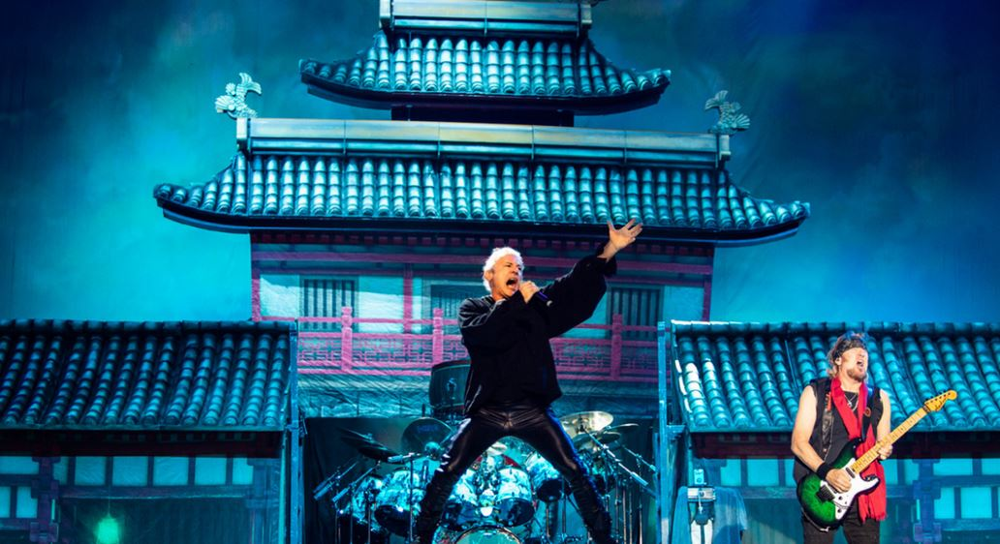

CAMPANHAS PUBLICITÁRIAS
Segundo o site Wikimetal, Iron Maiden desembarca no Brasil esta semana para iniciar a Legacy of The Beast Tour pelo país, com três apresentações e o show como headliner do Rock In Rio. E para surpreender a banda, uma campanha organiza um coral com as três faixas de Senjutsu do setlist.

A campanha é uma iniciativa conjunta do Wikimetal com o portal Iron Maiden Brasil Notícias, que convocam fãs da Donzela de Ferro pelas redes sociais para aprender a cantar a letra de “Senjutsu”, “Stratego” e “The Writing on the Wall”, que abrem os shows na atual turnê, e fazer assim o “maior coral que o Iron Maiden já viu”.